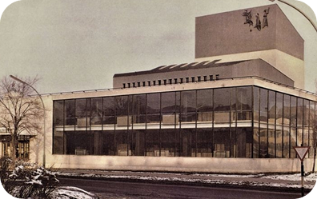

Театр драмы имени В.В.Маяковского
Театр драмы имени В.В.Маяковского
Наш театр родился в 1923 году из любви к слову и живому искусству. В холодном здании бывшего купеческого особняка на окраине города собралась труппа из семи актёров, решивших, что сцена — это не работа, а способ дышать.
Первый спектакль по пьесе местного драматурга собрал всего сорок зрителей, но они аплодировали стоя, и с того вечера театр обрёл дыхание. В 1930-х годах к нам пришёл режиссёр Леонид Аркадьев, который принёс систему Станиславского в каждый уголок нашей студии.
Это время стало золотым: спектакли шли при полных залах, а критики называли нас «живым сердцем провинции». Во время войны мы не закрывались: актёры уходили на фронт, а оставшиеся давали концерты для раненых в госпиталях.
